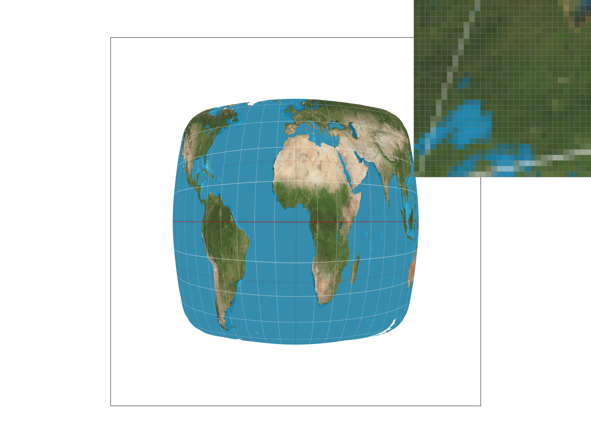

Throughout this homework we built a rasterizer that renders vector graphics through a variety of ways to improve the end result. The idea behind this is that there are vector representations of what we want to render and we have to convert those to pixel color values. There are a variety of implementations and strategies that go into getting the best value to set the pixel to to make sure that it had a good end result.
We learned a lot of things through this homework. Before completing this assignment, we both had very little experience with computer graphics. We used graphics rendering programs, but never had experience creating one ourselves. It was really interesting and satisfying to program the supersampling and then see all the images look better. The concepts behind the different kinds of sampling and using the different mipmap levels to get the best sampling rate were very interesting as well. Being able to render textures over images using pure math and computation and to get it all to look even better with the aforementioned techniques made this a really satisfying assignemnt to complete.
The way we rasterized the triangle was by first calculating the bounding box of the triangle to see which coordinates we need to check. We then iterated through all those coordinates and converted them to barycentric coordinates to check if it was in the triangle (all > 0). If it was then we colored the pixel with the color given to us.
The algorithm is no worse than the one that checks every single sample in the bounding box because in our algorithm we do exactly that. We go through every sample in the bounding box and see calculate to see if it is in the triangle.
The basic idea behind our supersampling is that we put everything that we want to draw on the frame buffer onto the sample buffer first. This is because the sample buffer will always be width * height * sample_rate since with supersampling we need sample_rate times more data per pixel of the frame buffer. To accomplish this, we needed to change the size of the sample buffer anywhere the frame buffer size was changed or the sample rate was changed. And, at the end when we resolve to frame buffer, we will average the sample_rate number of pixels in the sample buffer that correspond to the single pixel in the frame buffer.
Supersampling is useful because it improves the quality of the image through providing benefits such as anti-aliasing and reducing Moiré Patterns. It antialiases the triangles because we rasterize the triangle to a higher resolution and then average a sample_rate number of pixels to represent one pixel in the frame buffer, thus anti-alisasing the triangle since it reduces the high frequency around the edges.
In the images above, you can see the left corner of the red triangle at 1, 4, and 16 sampling rates. The reason why we observe these differences is because we are using higher and higher resolutions. The higher the sample rate, the more samples we get per pixel and thus we can see more pixels that are in between red and white since it is averaging more of a range of number of red vs white pixels in higher resolutions.
We rotated the rectangles in the arm of the robot to make it look like it's waving. We also changed the color to cyan!
Barycentric coordinates are coordinates that are used to express the position of a point inside a triangle using three coordinates that add up to 1. Each of these coordinates corresponds to a vertex of the triangle. The higher the coordinate is the closer it is to the vertex it corresponds to.
In the image above, we are doing a linear interpolation using barycentric coordinates. As you can see, each vertex has a different color associated with it. If we multiply the barycentric coordinates by the color of each vertex, we get the color of the pixel and the closer it is to a vertex the more like that color it is.
Pixel sampling is the process of determining the color of a pixel by examing pixels around it. In our specific case, we implemented two pixel sampling methods - nearest and bilinear. The nearest pixel sampling method is where you take the nearest pixel on the texture and then use that color. The bilinear sampling method is where you take the four neareset points and then do linear interpolation on the colors.
We implemented these sampling techniques when we rasterized a textured triangle by going through each coordinate of the triangle and finding it's barycentric coordinates. We use those to find the corresponding location on the textured triangle and then we use one of the two sampling methods to find the color of the pixel. We created a function lerp that we use for bilinear interpolation where it interpolates the color based on the four nearest squares. For the nearest pixel sampling method, we just round to the nearest pixel of the texture and set the pixel to that color.
Nearest with sampling rate 1
Nearest with sampling rate 16
Bilinear with sampling rate 1
Bilinear with sampling rate 16
We can see that the bilinear sampling is much better than nearest for sampling rate of 1 since it provides some anti-aliasing benefit by doing a linear interpolation over the 4 nearest pixels. We can see that when we increase the sampling rate to 16, both have less artifacts and the difference between bilinear and nearest is less noticable.
Level sampling is where we choose from precomputed downsampled versions of the texture to sample from based on the viewing distance or angle. We implemented it for texture mapping using a mipmap, which stored downsampled versions of the original texture.
The problem is that if the triangle on texture space that we are mapping over is much larger than the triangle on your screen space, then it is very likely that the triangle in screen space will sample random pixels that may have pixel values that don't really represent the entire triangle in texture space. So, to find the exact level D of the mipmap that we want to use, we just need to base it on this difference between screen space and texture space. If the sample pixels are much farther away on texture space than screen space, then we have to downsample the texture a lot, blurring it so that it doesn't have random artifacts.
To accomplish this, we calculated the max of the norm of (du/dx, dv/dx) and (du/dy, dv/dy). The larger these norms are, the larger their change of rate is in the texture space with respect to the screen space. We then take the log base 2 of the max and then we get the level, selecting the right texture from the mipmap and then sampling from it.
For lsm == L_NEAREST, we just rounded the resulting D level to the nearest valid mipmap level and passed it as a parameter to the nearest or bilinear sample function. For lsm == L_LINEAR, we computed a linear interpolation of the pixel results given by the two nearest levels.
Faster because it only involes sampling at the pixel level. Doesn't use much memory because it just samples from nearby pixels. But, antialiasing power isn't that great and may leave some artifacts with high-frequency details.
It can reduce speed since all the levels are precomputed and reduces the number of texture samples as well. It requires additional memory since we need to store the precomputed mipmaps. And, it reduces aliasing artifacts significantly and is especially effective when there are varying distances and viewing angles.
It's slower if there are more samples since it takes more time to run the calculations. It requires more memory to store more samples since we are increasing the resolution. It's very effective since it captures more information per pixel, especially with smoothing edges.
Zero level mipmap with nearest sampling
Zero level mipmap with bilinear sampling
Nearest mipmap level with nearest sampling
Nearest mipmap level with bilinear sampling
This being our first experience working with graphics, it wasn't all sunshine and rainbows. Some of the techniques (i.e. level sampling and bilinear sampling) had a lot of mathmatical reasoning that we had to figure out before we could start building the logic for this assignment. At first, barycentric coordinates weren't the most intuitive, but after we delved into the math and were able to derive where the equation came from, we were able to get it right. We also had some initial trouble figuring out the right way to approach the sample rate implementation since we weren't sure what the best way to go about the implementation was. But, then reading into the assignment and the hints, it gave us the notion that the best way to do it was with the sample_buffer resolution adjusting. Overall, it was a very fun assignment and we learned a lot through the process :)!